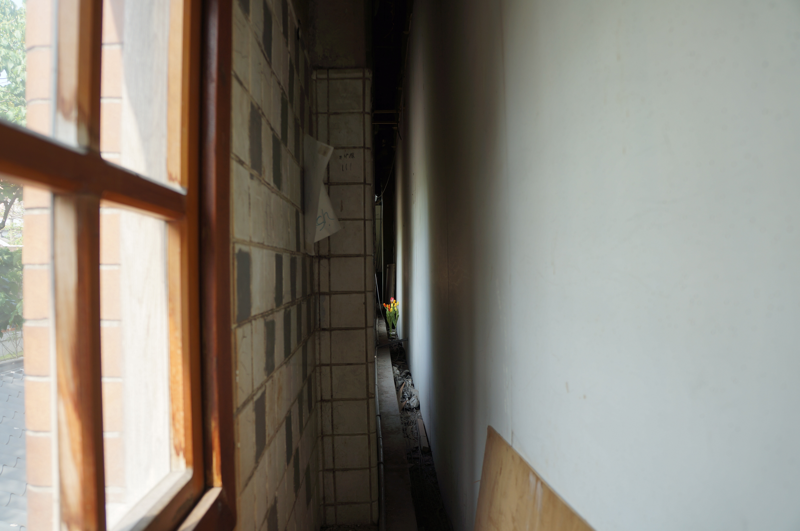

之間
2018
人造花，尺寸依場地而定
華山1914文化創意產業園區，前身為日治時期的清酒工場，在2000年左右轉型為文創園區營運至今。在場勘的過程中，我注意到空間中存在著許多後來增設的結構。這些結構或許出於對建築的保護，也可能作為對歷史痕跡的修飾與覆蓋，進而生成新的展示空間。然而，在劃定實際使用範圍的同時，也劃出無法被使用的畸零地與邊界，推演出一種界外的感受。
由此開始，我回應建築空間本身，以及其作為展覽場域的使用狀態展開工作。
將牆打開，我想像視線穿過狹窄的距離，在兩面牆之間延伸，目光最終停留在花束上。觀者在觀看花的同時，始終與之維持著一段無法完全靠近或佔有的距離，於是距離不再只是空間的間隔，而成為一種緩慢的、無法越過的停留，這種感受並不指向具體的敘事或象徵。
在花的周圍的所有元素，光線、磁磚、灰塵、碎屑和老舊的痕跡，當一切都被納入，如同進入一個尚未被命名的區間。